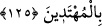

HİKMET VE GÜZEL
ÖĞÜTLE ÇAĞIR
125. (Rasûlüm!) Sen, Rabbinin yoluna hikmet ve güzel öğütle çağır ve onlarla en
güzel şekilde mücâdele et! Rabbin, kendi yolundan sapanları en iyi bilendir ve O,
hidâyete erenleri de çok iyi bilir.
Ey peygamberlerin en üstünü! “Sen,” insanları şeytanın yolundan “Rabbinin yoluna”
cennete ve Allah’a yakınlığa ulaştıran İslam’a “hikmet” yani davet edilen kişinin
tereddütlerini ortadan kaldıran ona hak olan itikadı veren faydalı kesin delillerle çağır.
Bu, hakîkatlerin tâlibi olan ümmetin havassını/seçkinlerini dâvet etmek içindir. “ve
güzel öğütle çağır” yâni ikna edici delillerle, faydalı ve ibretli kıssalarla dâvet et. Bu
da ümmetin avâmını dâvet içindir. Mev‘ıza, kişinin kalbini rikkate getiren sevap ve
cezayı zikretmek demektir. Nitekim el-Kâmûs’ta böyle geçer.
Hz. Şeyh Attâr (k.s.) der ki:
O’nun nûru mevcûdâtın aslı olduğundan
Her şey O’nun zâtı hürmetine yaratıldığından
Her iki cihanı dâvet etmek O’na vâcib oldu
Gizli açık bütün zerreleri Hakk’a dâvet etmek
Bilesin ki, var olan a‘yândan her biri Allah’ın isimlerinden bir isme dayanır ve bu
isim yoluyla bütün isimlerin kendisinde toplandığı Allah ismine ulaşır. Bu durumda
dâvetin ne faydası vardır, denilemez. Çünkü biz deriz ki: Dâvet, “Mudill” isminden
“Hâdî” ismine, zulmedenden âdil olanadır.
“ve onlarla en güzel şekilde mücâdele et!” Muhalif olanlarla en iyi münazara ve
mücâdele yolu olan rıfk, yumuşaklık, kolay olanı seçme ve İbrahim (a.s.)’ın yaptığı gibi
önce onların kalplerini teskin eden ve içlerindeki alevi söndüren sözlerle başlayarak en
güzel tarzda hakkı kabul etmeyen inatçılarla mücâdele et.
Âyet, hakkı ortaya çıkarmak için ilimde münâzara ve mücâdelenin caiz olduğuna
delildir.
Şeyh Semerkandî, tefsirinde der ki: “Bu âyette Hakk’a dâvet edilen kişilerin üç grup
olduğuna delil vardır. Çünkü hikmetle Allah’a davet edilen kimseler, havas ehlidir.